A-02 Front — watercolor (two garage doors)
Original Drawing Set
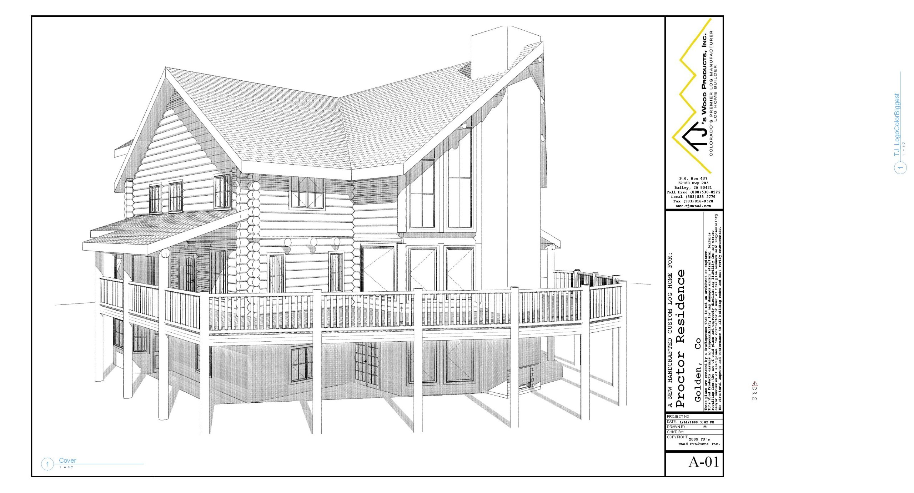
Original
Two-story main log volume with walk-out under a full-width deck. ONE tall chimney on the right of the main gable. Cathedral glass in that gable. Garage is off to the right of this view, not the hero. Scale: 3/8" = 1'0"
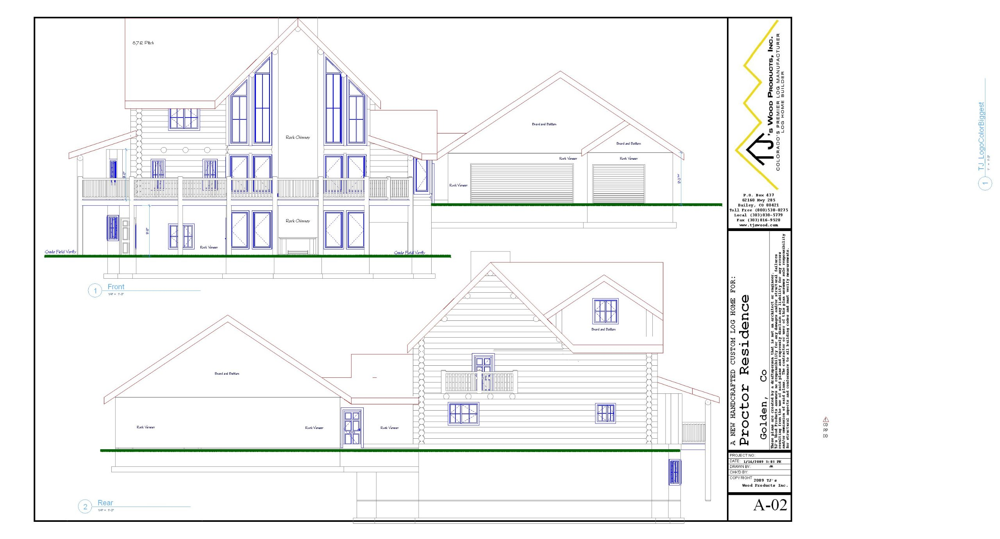
Original
Front: Grade Field Verify noted at base. Rock Veneer on lower level. Rock Chimney ×2. Board and Batten on garage gable. Two overhead doors with Rock Veneer bases.
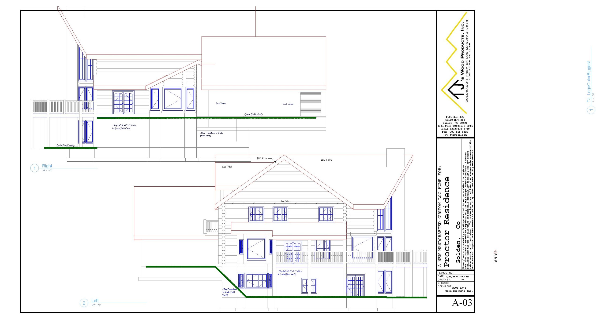
Original
Right side shows garage as a separate lower wing. 8:12 pitch on bedroom/loft wing, 12:12 on a secondary gable. Left side exposes the walk-out lower level step down.
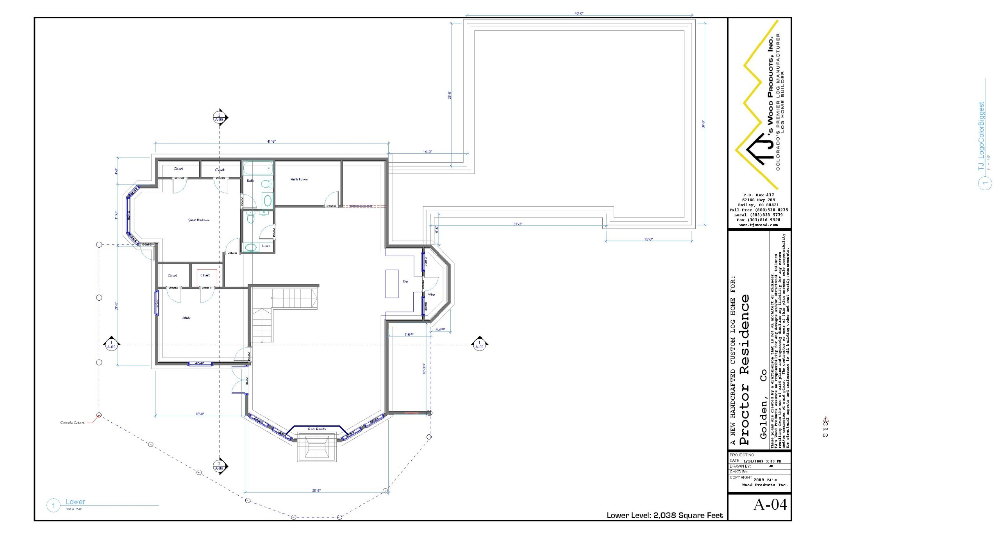
Original
Scale 1/4" = 1'0". Exterior overall: ~40'×40' main log shell + octagonal front bay. Concrete cistern lower-left. Two closets on guest bedroom. Walk-out doors front and side.
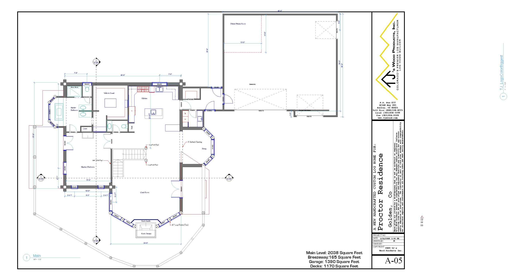
Original
Scale 1/4" = 1'0". Rock hearth and rock chimney in great room. Octagonal dining bay. 6" log posts at great room. Master bathroom with soaking tub. Walk-in closet. Stair to upper and lower. Future fitness room with 40'×30' garage footprint upper right.
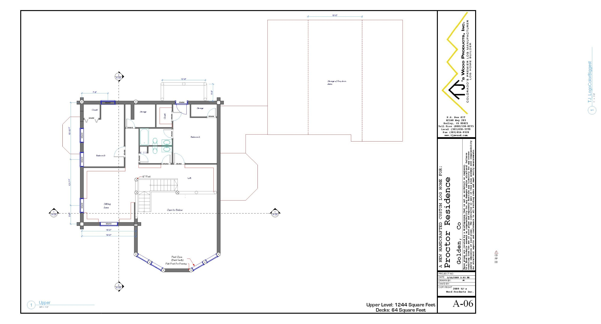
Option 1 — Original
Scale 1/4" = 1'0". "Open to Below" loft area centered. 6" post at peak framing. Storage above garage (drop-down stair). 16'×16' sitting area left. This sheet stays. Later options stack under it.
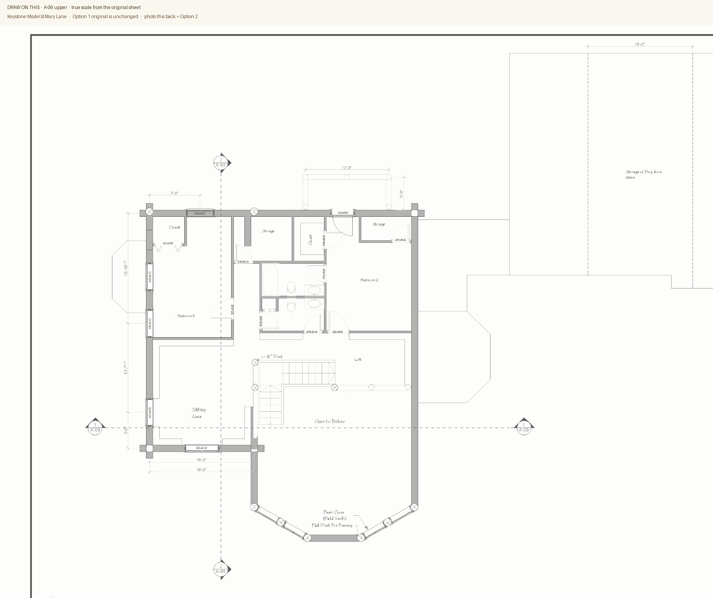
Draw on this
This is the real sheet, lightened. Not a redraw. Stairs and log shell are already correct. Mark Jack and Jill / second master, send a photo.
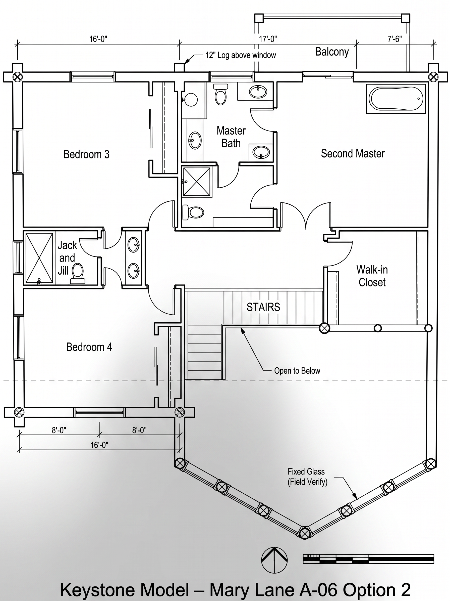
Option 2
Left 16' wing: Bedroom 3 + Bedroom 4 at 8'-0" each, Jack and Jill between. Second master with double doors from the loft, enlarged bath (tub, shower, dual vanity), walk-in closet. Two windows on the long left wall. Balcony on the master.
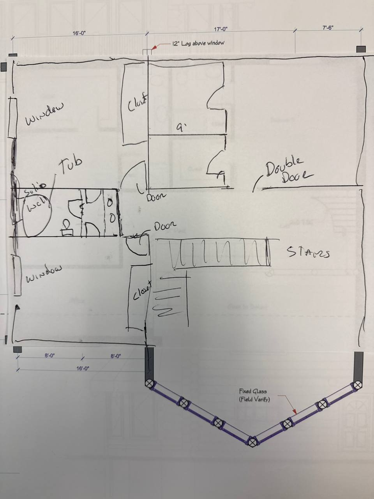
Source
Messy is fine. This is the source of Option 2.
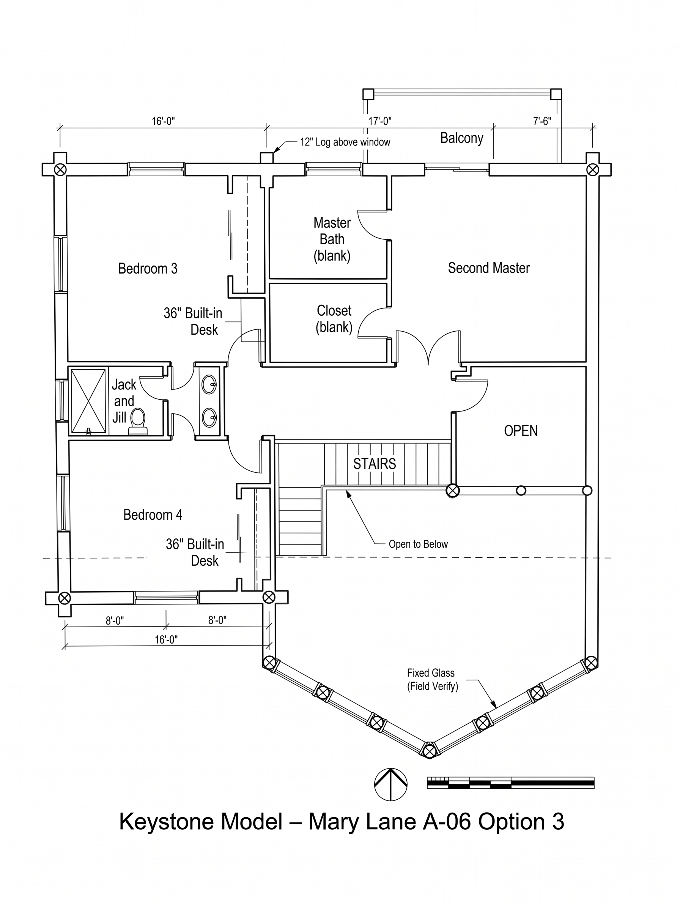
Option 3
Bedroom 3 and 4 each get a 36" granite kid desk next to the closet. Jack and Jill stays. Second master has no tub. Walk-in off the loft is OPEN. Master bath / closet outlines only — no fixtures.
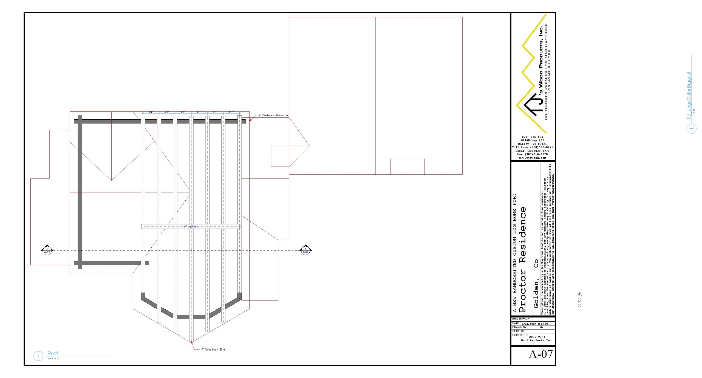
Original
48" log ridge beam (Typ). 2" overhang at eaves. Ridge directions: primary N-S on main gable, secondary ridge over loft gable, tertiary over breezeway. Garage roof separate.
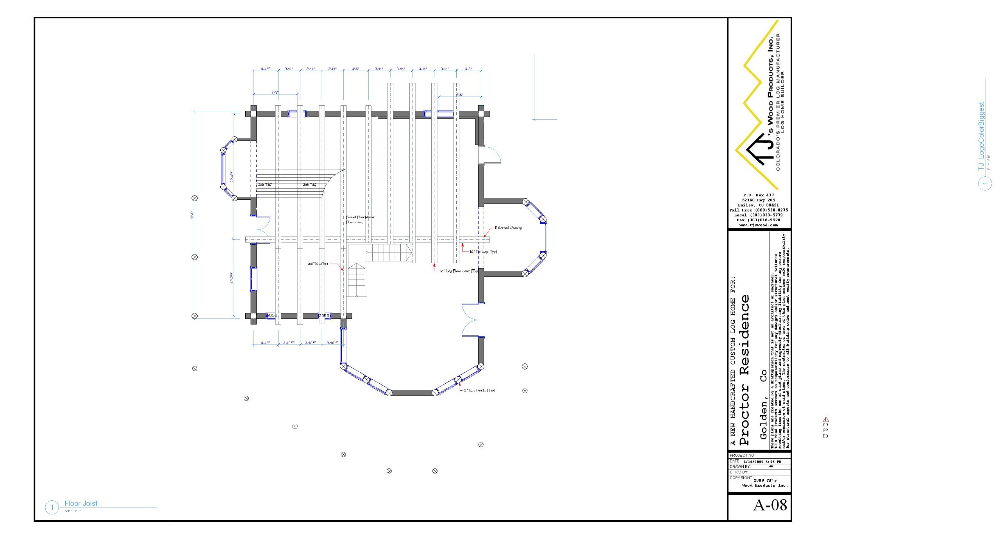
Original
6" log floor joist (Typ). 10" log tie (Typ). Poured pier foundation per structural. Framed opening for stair. Arched opening noted at dining bay.
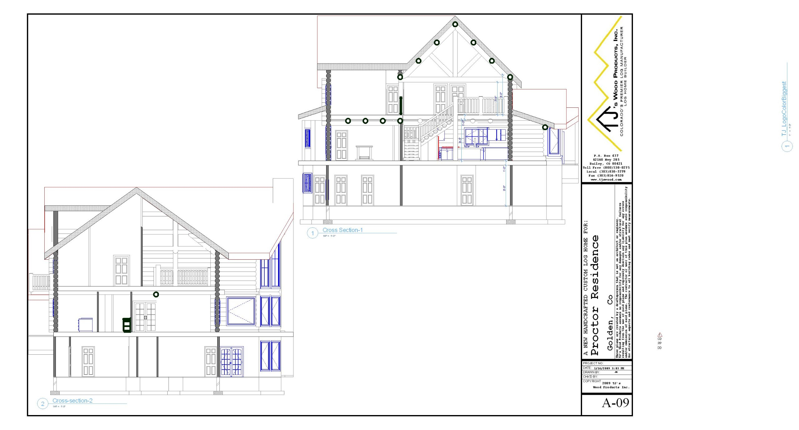
Original
Sections reveal three full stories: lower walk-out, main, upper loft. Log columns visible through all levels. Deck cantilever over lower level. Interior stair connects all three.